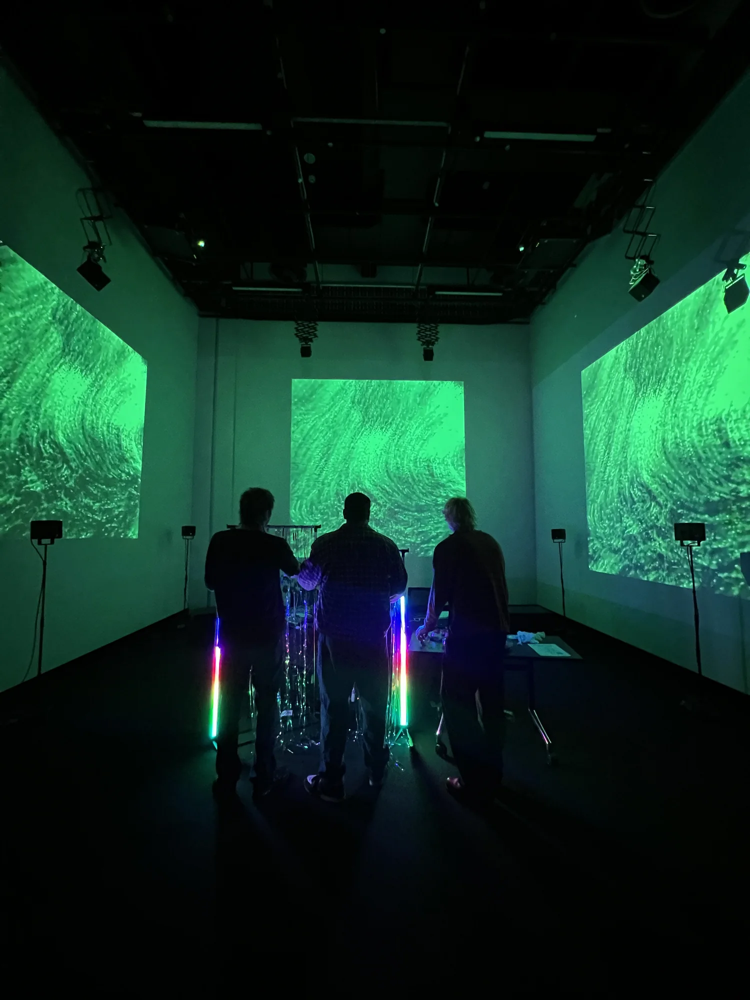
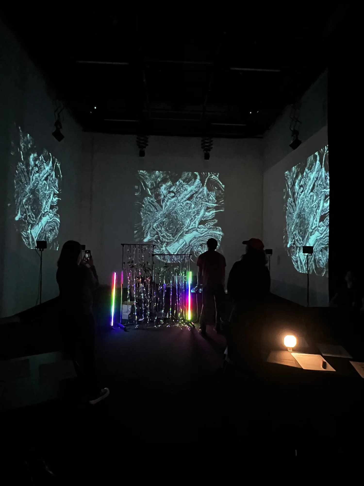
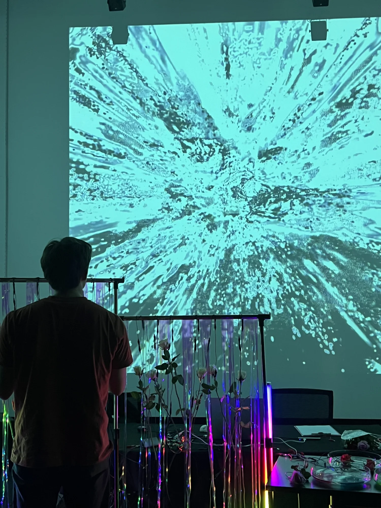
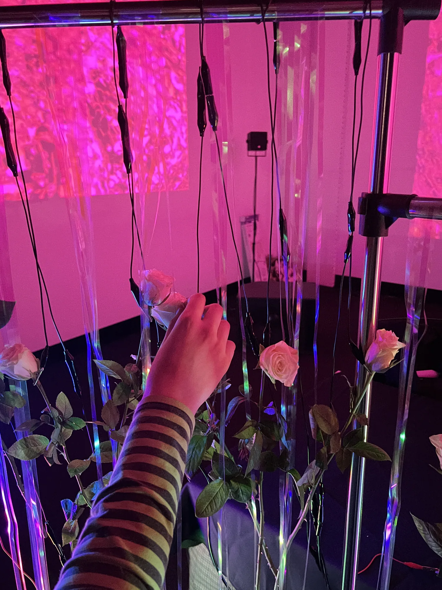
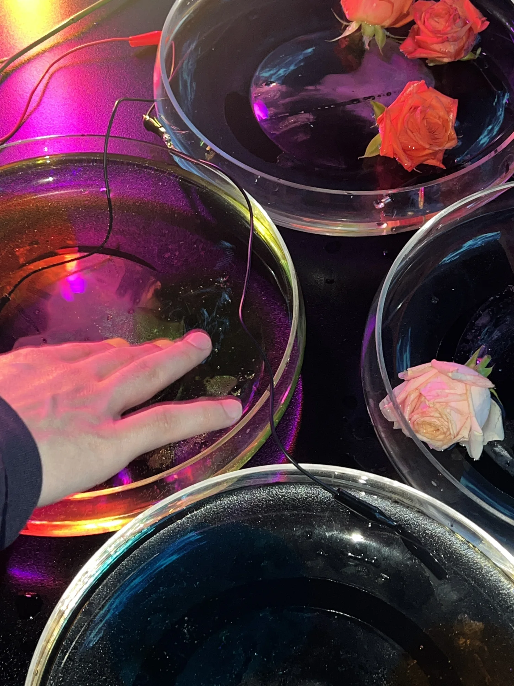
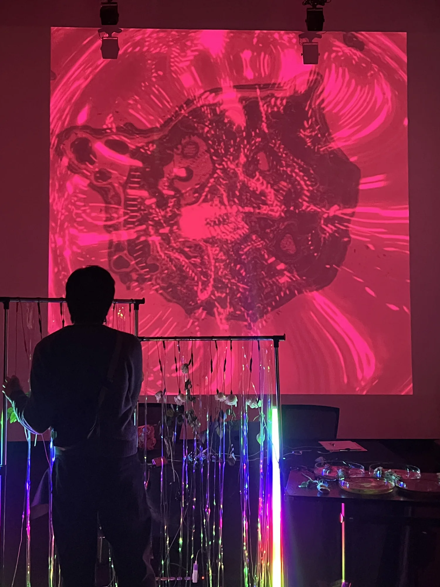
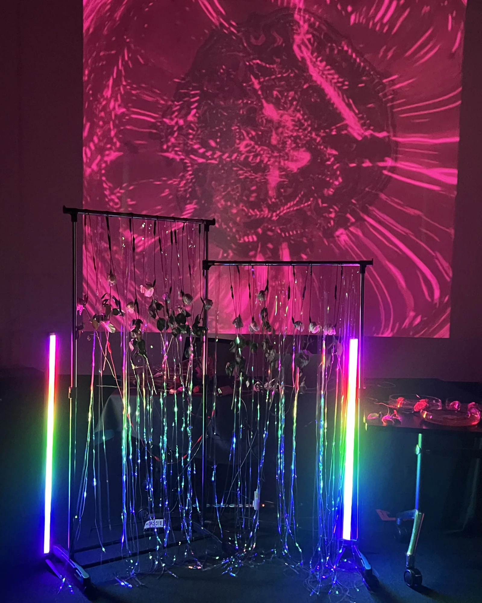

The Meta Kibun Project
작품 소장 문의
관심 작품과 설치하려는 공간을 알려주세요.
- 이메일
- minniepark.studio@gmail.com
- 제목
- Artwork acquisition enquiry, The Meta Kibun Project
주소를 복사해 사용하는 이메일 서비스에서 작성해도 됩니다.

생장미, 물, 색과 참여자가 구성한 언어로 이루어진 설치입니다. 관객은 터치와 개인의 경험, 문화적 맥락을 통해 감정이 어떻게 형성되는지 탐색합니다.
작품 개요
The Meta Kibun Project는 감정의 양면성에 관한 Meta Rose의 탐구를 한국어 ‘기분’을 통해 발전시킵니다. 기분은 감정 상태뿐 아니라 그 순간의 분위기까지 아우르는 개념입니다. 작업은 Park의 한국적 배경에서 출발해 감정을 언어, 기억, 문화적 위치와 만남의 조건 속에서 형성되는 경험으로 바라봅니다. 촉각적 인터랙션과 문화적으로 형성된 색의 표현이 어떻게 관객으로 하여금 층위가 있고 변화하며 쉽게 이름 붙일 수 없는 감정에 주목하게 하는지를 묻습니다.
장미는 살아 있는 재료이자 양가성을 구성하는 구조로 존재합니다. 꽃잎과 가시는 매혹과 불편함을 함께 지니며, 오디오비주얼 구성에서도 부드러운 반응과 글리치 기반 효과가 공존합니다. 이 대립은 참여자가 느껴야 할 감정을 지정하기보다 서로 다른 감각을 탐색할 가능성을 엽니다.
참여 방식과 구성
경험은 ‘오늘 당신의 기분은 어떤가요?’라는 질문에서 시작됩니다. 참여자는 색을 고른 뒤 작품에서 제시하는 한국어의 정서적 접미어를 결합하거나, 자신이 선택한 언어로 접미어를 직접 만듭니다. 한국어 색채 어휘의 표현적 뉘앙스를 출발점으로 삼되 각자의 색 표현을 구성할 여지를 남깁니다. 이름을 붙이는 행위는 미리 정해진 감정 범주를 고르는 과정이 아니라 자신의 감정을 돌아보는 과정이 됩니다.
이후 참여자는 생장미를 만지며 16개의 오디오비주얼 효과가 층위적으로 구성된 시스템의 반응을 활성화합니다. 사운드, 빛과 무빙이미지는 세 개의 스크린을 통해 펼쳐집니다. 물의 표면을 만지거나 그릇에 손가락을 담그면 색과 이미지가 달라지고, 색이 있는 슬라임은 또 다른 촉각적 질감을 제공합니다. 참여자는 재료와 반응을 선택하며 그 순간의 경험을 구성하는 주체가 됩니다. 작품은 보고 듣는 감각뿐 아니라 손과 신체를 통해 경험됩니다.
연구와 발전 과정
작품은 Park가 RMIT University에서 수행한 2025년 창작 실천 기반 Honours 연구를 통해 발전했으며, 설치와 전시는 연구가 이루어지는 현장이기도 했습니다. 관객은 작품의 오디오비주얼을 담은 비인터랙티브 영상을 먼저 본 뒤 인터랙티브 설치에 참여했습니다. 이 순서는 구성을 관찰하는 경험과 그 구성에 직접 참여하는 경험의 차이를 돌아보는 바탕이 됐습니다.
이틀간의 전시에서 반구조화 일대일 인터뷰 15건과 설문 응답 16건을 수집했습니다. 참여자들은 촉각적 경험이 신체적이고 개인적인 관여를 이끌었다고 서술했으며, 일부는 색의 선택과 익숙하지 않은 정서적 언어가 쉽게 표현하지 못했던 감정을 알아차리는 도구가 됐다고 설명했습니다. 녹화된 영상을 관람한 경험과 비교할 때 인터랙티브 작품에 관한 응답에서는 주도권과 개인적인 연결감이 자주 언급됐습니다.
이 응답들은 객관적으로 판독할 수 있는 감정 상태의 측정값이 아니라 특정한 맥락에서 형성된 경험의 서술로 다뤄집니다. 연구는 색과 감정의 보편적 대응 관계를 확립하거나 문화적 차이를 포괄적으로 검증했다고 주장하지 않습니다. 재료의 감각, 표현의 선택과 관객 참여가 특정 전시의 만남 안에서 어떻게 미묘한 감정의 성찰을 뒷받침하는지 살펴보는 데 의미가 있습니다.
전시
2025년 9월 12-13일 멜버른 RMIT University에서 전시했습니다. 생장미, 물, 촉각적 재료, 사운드, 빛과 3면 무빙이미지를 함께 구성했습니다. 동반 Honours 논문에는 개념적 틀, 설치, 연구 방법과 관객의 경험이 기록돼 있으며, 이후 Meta Rose에서 이어지는 정서, 참여와 문화적 맥락 속의 경험에 관한 작업의 기반이 됩니다.
작품 기술 정보
RMIT University / 2025
- 매체
- 창작 실천 기반 연구에서 함께 제시한 인터랙티브 오디오비주얼 설치와 비인터랙티브 영상.
- 재료
- 생장미, 물, 컬러 슬라임, 사운드, 빛과 3면 무빙이미지.
- 설치 크기
- 장소와 설치 구성에 따라 가변.
- 제작 도구
- TouchDesigner(주 소프트웨어), 16개 오디오비주얼 효과의 층위를 제어하는 촉각 인터페이스.
- 작가 / 제작
- Minnie Park, 작품 구상, 전시 기획 및 제작.
프로젝트 자료
Original project website ↗주요 기록
Visual Index →





작품 소장 문의 →
관심 작품과 설치하려는 공간을 알려주세요.
- 이메일
- minniepark.studio@gmail.com
- 제목
- Artwork acquisition enquiry, The Meta Kibun Project
주소를 복사해 사용하는 이메일 서비스에서 작성해도 됩니다.